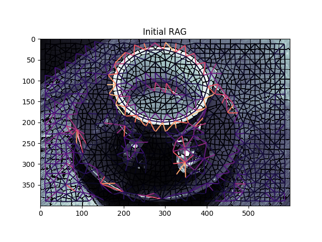
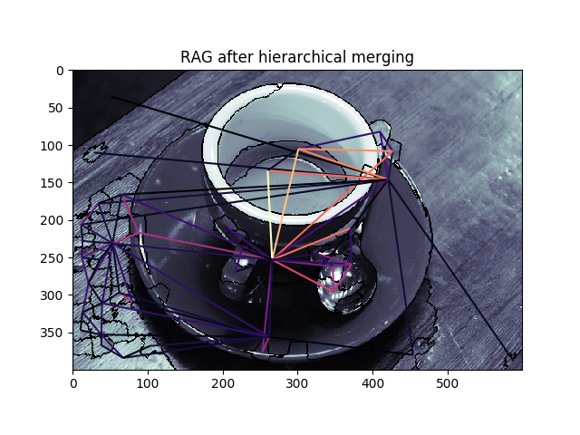
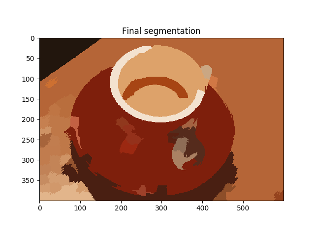

Source
SourceNote
Click here to download the full example code
Hierarchical Merging of Region Boundary RAGs¶
This example demonstrates how to perform hierarchical merging on region
boundary Region Adjacency Graphs (RAGs). Region boundary RAGs can be
constructed with the skimage.future.graph.rag_boundary() function.
The regions with the lowest edge weights are successively merged until there
is no edge with weight less than thresh. The hierarchical merging is done
through the skimage.future.graph.merge_hierarchical() function.
For an example of how to construct region boundary based RAGs, see
Region Boundary based RAGs.
- 
- 
- 
from skimage import data, segmentation, filters, color
from skimage.future import graph
from matplotlib import pyplot as plt
def weight_boundary(graph, src, dst, n):
"""
Handle merging of nodes of a region boundary region adjacency graph.
This function computes the `"weight"` and the count `"count"`
attributes of the edge between `n` and the node formed after
merging `src` and `dst`.
Parameters
----------
graph : RAG
The graph under consideration.
src, dst : int
The vertices in `graph` to be merged.
n : int
A neighbor of `src` or `dst` or both.
Returns
-------
data : dict
A dictionary with the "weight" and "count" attributes to be
assigned for the merged node.
"""
default = {'weight': 0.0, 'count': 0}
count_src = graph[src].get(n, default)['count']
count_dst = graph[dst].get(n, default)['count']
weight_src = graph[src].get(n, default)['weight']
weight_dst = graph[dst].get(n, default)['weight']
count = count_src + count_dst
return {
'count': count,
'weight': (count_src * weight_src + count_dst * weight_dst)/count
}
def merge_boundary(graph, src, dst):
"""Call back called before merging 2 nodes.
In this case we don't need to do any computation here.
"""
pass
img = data.coffee()
edges = filters.sobel(color.rgb2gray(img))
labels = segmentation.slic(img, compactness=30, n_segments=400)
g = graph.rag_boundary(labels, edges)
graph.show_rag(labels, g, img)
plt.title('Initial RAG')
labels2 = graph.merge_hierarchical(labels, g, thresh=0.08, rag_copy=False,
in_place_merge=True,
merge_func=merge_boundary,
weight_func=weight_boundary)
graph.show_rag(labels, g, img)
plt.title('RAG after hierarchical merging')
plt.figure()
out = color.label2rgb(labels2, img, kind='avg')
plt.imshow(out)
plt.title('Final segmentation')
plt.show()
Total running time of the script: ( 0 minutes 1.217 seconds)